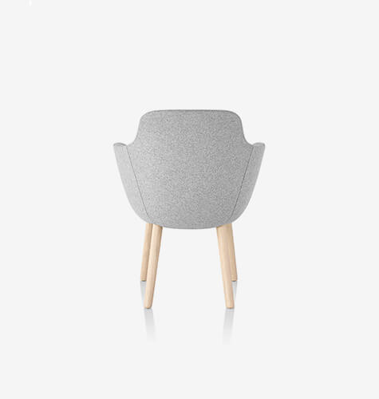
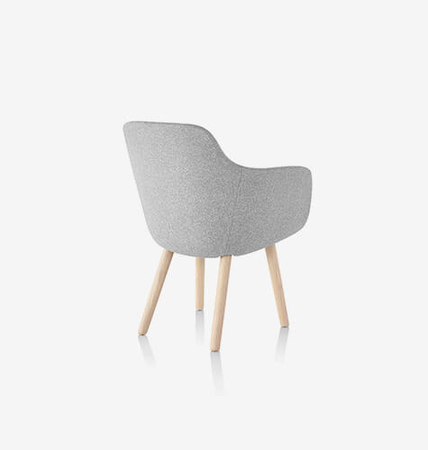

<div class="portfolio-ajax-page">
<div class="row">
<div class="col-lg-7">
<div class="carousel arrows-grey arrows-only arrows-visible dots-dark dots-inside" data-items="1">




</div>
</div>
<div class="col-lg-5">
<div class="project-description">
<h2>Woody Chair</h2>
<p>Woody Chair has the guts to design and develop the impossible. </p>
<p>With passion and a lot of expertise we create a surprisingly timeless collection of beautiful functional furniture, made with innovative and sustainable materials. Our brand represents connection.</p>
<hr>
<div class="portfolio-attributes style1">
<div class="attribute"><strong>Client:</strong> Woody Chair</div>
<div class="attribute"><strong>Website:</strong> <a href="http://inspiro-media.com/" title="Woody Chair" target="_blank">inspiro-media.com</a></div>
<div class="attribute"><strong>Date:</strong> 2017-09-01</div>
<div class="attribute"><strong>Services:</strong> Website Design, UX</div>
</div>
<hr>
<div class="portfolio-share m-t-20">
<h4>Share this project</h4>
<div class="align-center">
<a class="btn btn-xs btn-slide btn-light" href="#">
<i class="fab fa-facebook-f"></i>
<span>Facebook</span>
</a>
<a class="btn btn-xs btn-slide btn-light" href="#" data-width="100">
<i class="fab fa-twitter"></i>
<span>Twitter</span>
</a>
<a class="btn btn-xs btn-slide btn-light" href="#" data-width="118">
<i class="fab fa-instagram"></i>
<span>Instagram</span>
</a>
<a class="btn btn-xs btn-slide btn-light" href="mailto:#" data-width="80">
<i class="far fa-envelope"></i>
<span>Mail</span>
</a>
</div>
</div>
</div>
</div>
</div>
</div>
